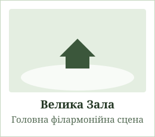
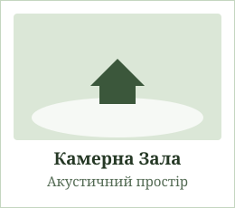
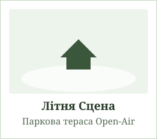

Інформація про концерт
Визначення «симфонічний концерт» століттями викликало трепетне ставлення серед поціновувачів музики. Це свято звуку, яке об'єднує класичну гармонію та сучасну експресію. Якщо ми поглянемо на історію оркестрового мистецтва, то побачимо, як поступово народжувалися ці безсмертні мелодії. Концерт «Симфонія Світла» покликаний відкрити слухачам нові грані знайомих шедеврів.
У програмі урочистого вечора прозвучать як драматичні пасажі світових класиків, так і авторські аранжування саундтреків сучасного кінематографа. Понад 70 інструментів одночасно створять неповторну звукову палітру під склепінням зали.
Новини культурного життя
-
Відкриття 98-го концертного сезону:
- Прем'єра нової симфонічної сюїти «Відродження»
- Виступ запрошених солістів із Віденської філармонії
- Серія вечірніх акустичних концертів при свічках
- Благодійний мистецький проєкт «Музика заради перемоги та надії».
- Встановлення інноваційного освітлення сцени та сучасних мікрофонів студійного класу.
- Безкоштовні майстер-класи для молодих виконавців від провідних майстрів сцени.
Сторінка із розташуванням
План розташування залів комплексу (наведіть курсор на картку зали):

Велика Зала
Головна сцена на 1200 місць. Призначена для масштабних симфонічних полотен, хору та урочистих концертів.

Камерна Зала
Затишний простір на 350 слухачів з унікальною природною акустикою для скрипкових та фортепіанних вечорів.

Літня Сцена
Відкритий парковий майданчик для виступів під зорями в теплу пору року. Свіже повітря та приємна атмосфера.
Інформація про виконавця
Багатьом слухачам може здатися дивовижним той факт, що за кожним бездоганним виконанням стоять сотні годин репетицій та натхненної праці диригента. Головний диригент оркестру — народний артист, лауреат міжнародних конкурсів, який керував виступами у найвідоміших залах Європи.
Його манера диригування вирізняється особливою пристрастю та тонким відчуттям темпу. Разом з оркестром вони створюють справжнє диво, де кожен звук торкається найглибших струн людської душі.
Адаптивна галерея інструментів
Шедеври інструментарію та сольні партії оркестру «Симфонія Світла» (CSS Grid сітка)
Концертна скрипка
Серце оркестру, що веде основну мелодичну лінію з неперевершеною експресією та віртуозними пасажами.
Майстерня Кремони • 1782 р.Рояль Steinway & Sons
Флагманський інструмент великої сцени з кришталевим верхом та могутнім басовим резонансом.
Модель D-274 • Концертний грандМайстерна віолончель
Глибокий оксамитовий тембр, що наповнює симфонію драматизмом, теплом та проникливим звучанням.
Низький регістр • 8 сольних партійСрібна флейта
Легкі, повітряні та прозорі інтонації, які створюють магічний настрій у ліричних частинах сюїти.
Срібло 925 проби • Французька системаВелика концертна арфа
47 струн каскадних пасажів, що додають музичному полотну казкового блиску та витонченості.
Педальна арфа • 7 октавОркестрова валторна
Благородний м'який звук міді, що з'єднує духову та струнну групи у величні героїчні кульмінації.
Подвійна валторна F/BbКоманда та солісти програми
Видатні музиканти, які творять магію урочистого концерту
Володимир Лисенко
Головний диригентНародний артист України, запрошений диригент Віденської опери. Понад 25 років веде провідні оркестри світу до тріумфу.
Олена Ковальська
Перша скрипкаКонцертмейстер оркестру, лауреатка міжнародного конкурсу ім. Паганіні. Віртуозно веде партію перших скрипок.
Максим Мельник
Соліст фортепіаноЗапрошений соліст, випускник Королівської академії музики Лондона. Виконує центральний концерт для фортепіано з оркестром.
Анна Дорошенко
Прима сопраноЗолотий голос української академічної сцени, виконує сольні вокальні партії у прем'єрній симфонічній сюїті.
Статистика та метрики концерту
Ключові показники філармонічного сезону з використанням семантичних тегів progress та meter
Склад оркестру на сцені під час виконання
Рівень чистоти звуку та реверберації зали
Кількість заброньованих місць на прем'єру
Років неперервних філармонійних традицій
Відгуки слухачів та критиків
Враження глядачів та оцінки музичних оглядачів після генеральної репетиції
«"Симфонія Світла" — це феноменальний симбіоз класичної вивіреності та сучасної емоційної глибини. Звучання Великої зали перевершує всі очікування!»
«Неймовірна чуйність диригента до кожної інтонації. Соло на роялі просто зупинило подих у всій залі на 1200 слухачів. Обов'язково завітаємо знову!»
«Акустика оновленої сцени вражає: чітко розпізнається кожен інструмент від найтоншої флейти пікколо до контрабасових хвиль. Зразок європейського рівня.»
Категорії квитків та прайс-лист
Семантична порівняльна таблиця характеристик глядацьких секторів (з адаптивною прокруткою)
| Сектор зали | Видимість сцени | Акустичний ефект | Програмка вечора | Ціна квитка |
|---|---|---|---|---|
| Партер (Ряди 1–8) | Максимальна (ефект присутності) | Потужний прямий звук | Включено (Глянець) | 1200 ₴ |
| Амфітеатр (Ряди 9–18) | Панорамна (оптимальний огляд) | Ідеальний акустичний фокус | Включено | 950 ₴ |
| Бельєтаж та Царські Ложі | Преміальна висотна перспектива | М'яке об'ємне відлуння | Включено + Напої | 1500 ₴ |
| Балкон 1-го ярусу | Повний огляд оркестрової ями | Чудове просторове звучання | Електронна версія | 600 ₴ |
| Студентські місця (Балкон 2-й) | Оглядова зона | Гарна загальна чутність | За запитом | 350 ₴ |
Часті запитання (FAQ)
Корисна інформація для відвідувачів концерту «Симфонія Світла»
Який дрес-код діє у філармонії?
Чи можна відвідувати концерт із дітьми?
Чи дозволено проводити фото- та відеозйомку?
Як обміняти або повернути електронний квиток?
Форма зворотного зв’язку та бронювання
Заповніть заявку для резервування квитків або отримання консультації адміністратора